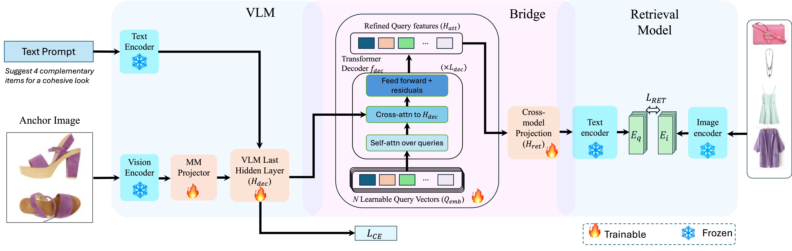

Method
BridgeVLM is an end-to-end vision–language model that unifies language generation and image retrieval within a single architecture. Unlike two-stage pipelines, BridgeVLM introduces a differentiable retrieval bridge that aligns multimodal generation and retrieval in the retrieval model’s embedding space. The bridge is encoder-agnostic and applies to any frozen dual encoder.

Figure 3. BridgeVLM Model Architecture. The VLM backbone processes the anchor image and text prompt. The retrieval bridge extracts learnable query vectors via a transformer decoder cross-attending to VLM hidden states, then projects them through the frozen retrieval encoder’s text encoder into the shared embedding space.
Key Components
- VLM Backbone: InternVL3-2B with a frozen vision encoder. The anchor image is tokenized into patch features and projected into the LLM token space via a two-layer MLP.
- Retrieval Bridge: A set of N learnable query vectors refined through a 2-layer transformer decoder with cross-attention to VLM hidden states, then projected via a linear layer.
- Retrieval Model: The projected queries are processed through the frozen retrieval encoder’s text encoder (e.g., Fashion-CLIP) to produce embeddings in the shared text–image space.
- Training Loss: A multi-objective loss combining next-token cross-entropy (language fluency) with InfoNCE contrastive loss (retrieval alignment).

Figure 4. Examples of vision-based retrieval by BridgeVLM. First row: “Complete the Look” (CTL)—given an anchor, retrieve complementary items. Second row: “Similar Item” (SI)—retrieve visually similar products.